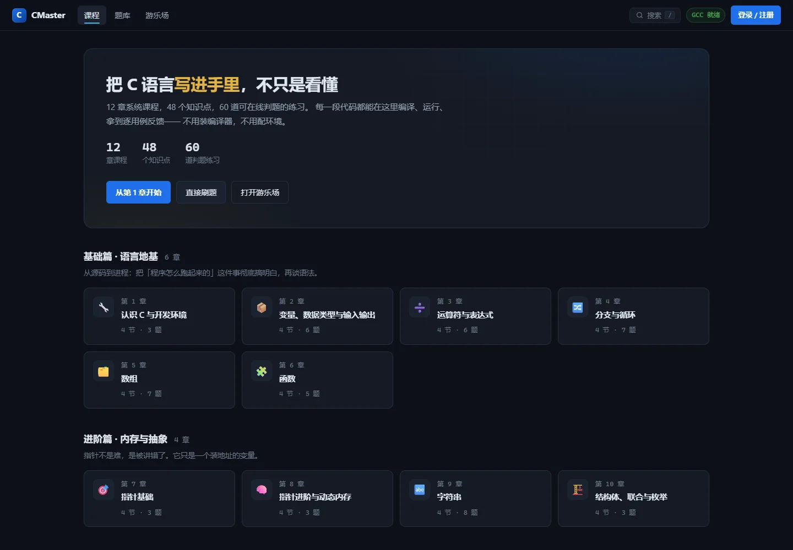

反馈来自实际运行
C 代码交给 GCC 编译，按测试用例比较输出，区分答案错误、编译错误和超时。

01 / THE STARTING POINT
课程阅读只是开始。把 12 章课程、48 个知识点、60 道真实编译练习和 166 张训练卡连起来，让学习者能验证想法，也能保存自己的理解。
02 / EXPERIENCE DESIGN
不只列出功能，也解释为什么这样做。
C 代码交给 GCC 编译，按测试用例比较输出，区分答案错误、编译错误和超时。
知识图谱梳理联系，内存演示解释指针与布局；练习后再回到具体知识点。
笔记、收藏、最近通过代码和提交历史一起保存；记录可导出，便于回顾。
03 / WORK IN PROGRESS
选取已经完成的创作阶段，
记录每次变化的意义。
以课程、游乐场和真实 GCC 判题构成基本学习循环，让练习有可以核对的结果。
从阅读示例，到验证自己的答案。
加入私人笔记、收藏、提交历史、通过代码恢复与学习记录导出，帮助接着上次继续。
从一次练习，到能够回顾的积累。
分离网站数据和临时判题容器，补充 HTTPS、持久化和 Linux 验收。部署代码已经发布，公网服务仍待开通。
从本机应用，走向可部署的完整服务。
04 / YOUR FIRST FEW MINUTES
用几分钟，认识这个作品。
按 GitHub 说明启动本机平台，注册自己的学习账号。
读第一章，再提交 c001，观察真实判题结果。
留下笔记或收藏，回到个人中心继续学习。
IDEAS ARE BETTER WHEN EXPERIENCED
目前通过仓库说明在电脑本机运行。完整在线版部署方案已准备，尚无公网学习网址；此处入口会打开 GitHub。